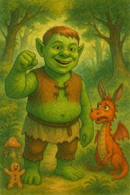
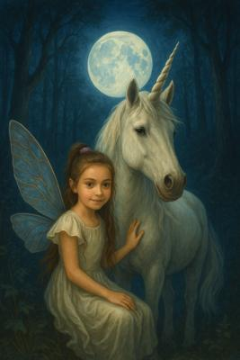
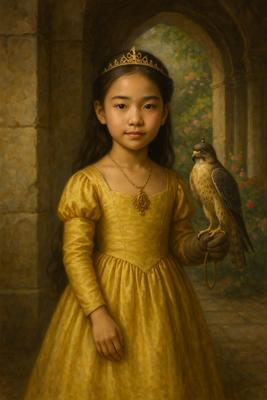
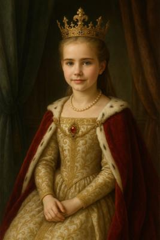
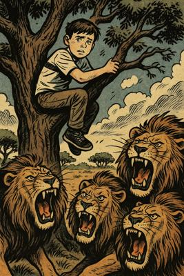
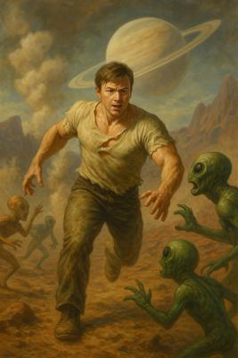

🖼️ Galerie – Tvorba žáků na prvním stupni základní školy
🍵 Princip čaje: klid, který mluví
„Učit není výkon. Je to pozvání.“
- Vytváříme prostor, kde se dítě cítí bezpečně.
- Nehodnotíme hned – nasloucháme procesu.
- Dáváme čas: ticho mezi otázkou a odpovědí je součástí učení.





